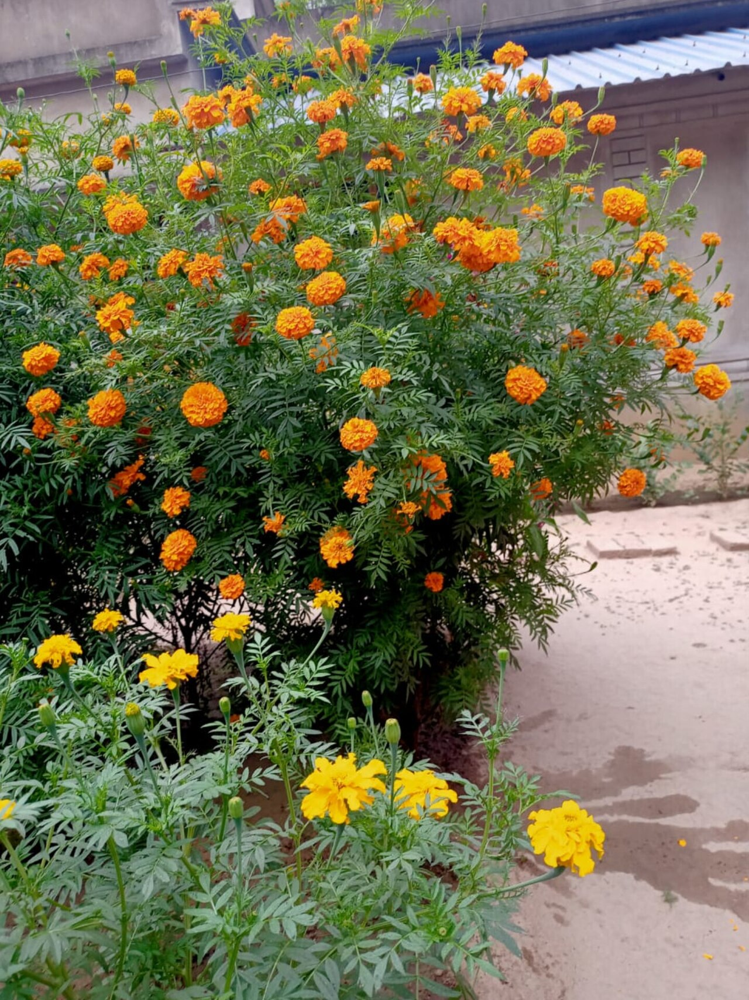

Voice
こんな声が届いたら、うれしい
以下は業種を想定したイメージ例です。実際のお客様の声ではありません。
イメージ例
相談しやすい雰囲気で、こちらの希望をゆっくり聞いてもらえました。うまく説明できなくても、一緒に考えてくれたのがうれしかったです。仕上がった指先を見るたび、気分が上がります。

Photo: イメージ
イメージ例
お仕事の合間に立ち寄れる場所があるのが心強いです。9階まで上がる時間も、ちょっとした楽しみになりました。手元が整うと、午後も前向きな気持ちで過ごせます。
イメージ例
イベントの前に相談したら、季節に合う色を一緒に選んでもらえました。自分では選ばない色にも出会えて、当日は何度も指先を眺めていました。